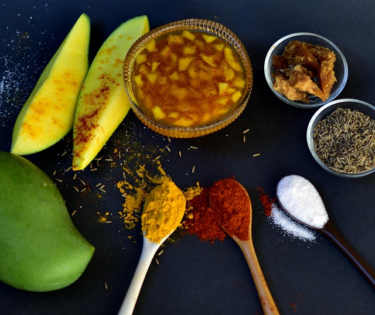
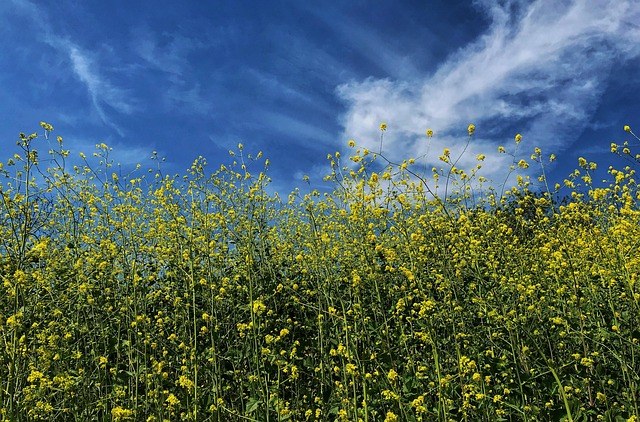
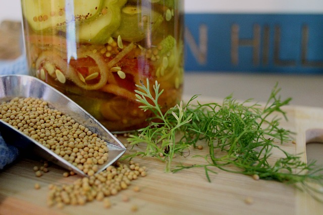

First Time Using Yellow Mustard Seed in Alberta

Variety of options
The Yellow Mustard Seed comes from the idea that small things can grow into something meaningful over time.
The yellow mustard seed may be tiny, but it develops into something strong, and that idea really stuck.
Based in Alberta, this site is about learning as you go and trying new ideas. One of the most obvious uses
of mustard seed is, of course, mustard, but it’s also great for adding flavour to soups, sauces, pickles,
and spice mixes. They’re small, but they pack a punch. It’s also a symbol of growth, showing how small
beginnings can still make a big impact.

The culture
The culture of The Yellow Mustard Seed is rooted in the belief that small efforts can grow into something meaningful over time.
Like the seed itself, it values patience, curiosity, and learning by doing. Based in Alberta, the culture encourages trying things out,
experimenting, and not worrying about being perfect right away. It’s a space where mistakes are part of growth and ideas are given room to
develop naturally. Small actions are appreciated, knowing they can still have a strong impact. Overall, the culture supports steady progress,
creativity, and turning simple beginnings into something worthwhile.
Signature Mustard seed dishes
Signature Mustard Seed dishes are inspired by the idea that simple ingredients can create bold, memorable flavors.
Mustard seeds may be small, but they bring depth and warmth to every dish. In this space, they’re used in sauces, rubs,
soups, and pickled foods, adding a gentle heat and richness without overpowering the meal. Based in Alberta, the dishes reflect
a practical, comforting style of cooking that encourages experimentation and personal taste. Each dish is about balance, patience,
and letting flavors develop naturally, showing how small details can make a big difference.

Pickling
Pickling with yellow mustard seed is all about patience and letting simple ingredients do their thing.
The seeds may be small, but they add a gentle heat and depth that slowly builds over time. In this process,
nothing is rushed. Flavors are given space to develop, whether it’s in vegetables, brines, or homemade preserves.
Based in Alberta, this approach to pickling reflects a practical, hands-on mindset that values tradition while still
leaving room to experiment. It’s about trusting the process and seeing how small additions can completely transform something simple.